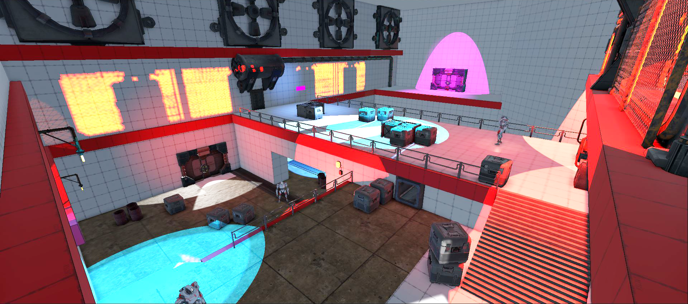
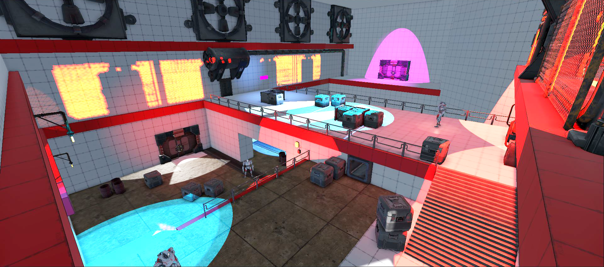

Ereban: Shadow Legacy is a fast-paced story-driven stealth platformer game where you become Ayana, the last descendant of a forgotten race. I was the main level designer in charge of the 8 levels from the game. My duties ranged from layout building, gameplay scripting, polish/finetunning to bug-fixing, all of this while working closely with the writers, the game directors and leads of every department.
Contributions
- Principal Level Design
- Layout and blockout creation
- Encounter design and AI high-level settings
- Quest design and prototyping
- Gameplay and Dialogue Scripting
- Polish and bug-fixing
The Main Mechanic and its influence in the Level Design
In Ereban, the main character has the ability of merging with the
shadows and moving freely through them. You can stay in this state as long
as you have stamina and you're not hit by light.
When you're inside the shadows, you're totally undetectable. This
allows you to smoothly advance under the enemy's feet, suddely appear behind their backs
or conviniently disappear right in front of their noses.
The Shadow Merge also means a big advantage in terms of mobility. Wherever there are
shadows, you can climb walls and reach high and otherwise inaccesible
places.


The possibilites this mechanic offers are countless,
as well as its constraints. A blinking light, an object that casts a
complex shadow, the position of the Sun and time of day (mid-day, sunset...) are just
examples of the many factors that influence the level design of certain
area.
Due to the morality component (killing enemies is not mandatory and
has its consequences) of the game, ensuring different paths and
playstyles for both lethal and non-lethal players was always a priority to
have in mind. I worked towards making these two opposite paths equally
attractive and challenging in their own ways, offering diverse
routes to approach every combat zone of the game.
Aside from the Shadow Merge, there are plenty of other optional shadow powers
and gadgets you can unlock in order to improve Ayana’s mobility and
combat skills.
As a level designer it was a fun challenge to create room and situations for
these abilities to shine, but without compromising the base design in case
players didn't have certain abilities at that point. My mantra was "not frustrating
without, but fun if used here".
Examples of this are creating vantage points to study enemy paths with
the binoculars, placing to enemies near each other for
a double mine explosion, or playing with enemy
sightlines to create sweet spots for the decoy to be
placed.
What these powers all have in common is that they need certain
collectables, hidden across all levels, to be crafted. I would often
place them in secondary zones and accesible by not-so-obvious
shadow paths, rewarding the freedom of explorationthat
Ereban’s great mobility encourages.


Quest Design and Scripting
Many quests take place in Ereban levels. Some of them are part of the
main story and others are there just to earn optional rewards and add a layer of
complexity to our protagonists. Apart from whiteboxing, I had a heavy scripting
role during the project and it was my duty to prototype early
versions of the quests and test their viability.
I was in charge of quest design from scratch (what actually happens
in this quest, how many steps does this mission have, what must the player do / go
in order to advance to the next step, what are the win/lose conditions of the
mission as a whole, are there any rewards…). After pitching the
idea to the design, art, narrative and technical leads and
having the green light, I would jump right in into the editor to start
prototyping.
Due to the diverse nature of the quests and the overall light-hearted
vibe of Ereban, I would often see myself scripting a wide range of different and
bizarre features. Chasing a bird from roof to roof, using a hand-drawn
map to find a plushie, shadow-climbing a radio tower to take down the
communications… prototyping quests that share so little in common was
definitely a challenge but overall contributed to the levels feeling unique
and memorable in their own way.
Later on development, and using a set of tools by the technical team, I added a layer of
complexity implementing custom cutscenes and animations into quests
sequences and dialogues. By giving each voiceline specific gesture animations
and camera shots we reached the level of polish and life into our
characters we were looking into.
Level Breakdown Example
Set in a training facility, the first level's acts as a tutorial and its main goal is
teaching you Ayana's ability to merge with shadows, which is central to both the gameplay
and narrative.
We want to show the player the basics of the movement in shadows, as well as
starting getting comfortable with the cameras and introducing stealth combat in a safe,
controlled environment.
Close to the end, players will have to put what they have learned into practice and
deal with real threats.

After an introductory sequence, Ayana starts the level in a waiting room of a Helios
Training Facility. Exploring this space, the player can optionally interact with the
workers nearby for narrative hints, showing Ayana's cluelessness about the place and
what they want from her is pretty much the same as the player's.
The player will eventually enter the training chambers, where they discover they will
have to pass a set of trials in order to become an Helios agent. Design wise, we wanted
to make sure that the player experiences everything step by step, so the choice of a
training chamber as the first level suited this purpose perfectly. Players do not
benefit from too much early freedom / unknowingly missing out info for the rest of the
game, so we do a little bit of hand holding in the form of a supervisor that pretty much
tells them what to do until they are familiar with the basics!

First and foremost, Ayana is asked to perform the main mechanic; the shadow merge. The
design of this room allows the player to freely test how both light and darkness affect
this ability, as well its horizontal and vertical traversal capabilities. Some boxes are
scattered around to show how the shadow merge can be used to traverse and climb up all
types of surfaces in shadow, and not only floors and walls.
In order to move to the next area the player faces the first skill gate, a part of the
level design that naturally and logically prevents the player from progressing until
they demonstrate that they have learned a key skill. In this case, using the shadow
merge vertically to climb up walls and reach higher surfaces. Purple paint stains mark
the way to follow, a concept that will recurrently appear through the game to guide the
player (this help can be turned off in the game settings).


Immediately after that, the player is set to complete the trial of agility. This
consists of a series of platforming pieces involving crouching, running, jumping and the
shadow merge. The main goal here is that the player starts getting comfortable with
Ayana’s movement metrics, in and outside the shadows.
Later into these trials, we also introduce the concept of the Shadow Climb (being able
to ledge grab a lit surface in some situations; a design solution that gives more sense
of agility and solves some level design limitations) and being able to merge in movable
objects as if we were
“attached” onto it, and follow their trajectory to their convenience. The Shadow Merge
can also be used to pass
through fences, as implicity told by being the only way to reach the key item - a
collectable that allows Ayana to craft gadgets - to
progress.

During playtests, we noticed that getting used to the stamina limits and recharging metrics was a key aspect to reinforce. That's why, somewhat late into production, we managed to sneak in this chamber, specifically designed to meet this purpose. The player has to stop in the middle platform to recharge stamina and be able to progress.


Up until this point the player has used the shadows in purely traversal and platforming
scenarios. Now for the first time, Ayana is asked to take down a “dummy” enemy without
being detected. This seemingly simple, linear section underwent many iterations in
search of the layout that could best showcase, in an “show, don’t tell” way, the enemy
features and weak points. First iterations used the same room for both the back and
aerial kill and was too open that the player would easily come up with non expected
paths to kill the enemy, that failed at teaching simple features we wanted the player to
learn.
In the end, we opted for a more corridor-like approach, in which you can get a grasp of
the enemy’s vision and noise parameters in a straightforward way. Covers are placed
accordingly for you to crouch behind and get closer, while blocking the light from the
enemy lanterns, that will take you out of the shadows. Using the Shadow Merge to jump
from one another will get you to the back of the enemy, where you can take it down
freely.
For the aerial kill room, an upgraded enemy will first reboot a taken down enemy in an
scripted sequence (to show this particular feature from the upgraded ones). This
recently revived enemy will proceed to wander in the lower level of the room, unaware of
your presence up in the high ground. The player must time their jump with the enemy
patrolling so Ayana can land the aerial kill on them.


It is after the enemy introduction that we show the concept of shadow powers, a set of
abilities the player can progressively learn in the form of a skill tree. The shadow
jump is the first ability that can be acquired, allowing the player to be propelled away
from shadow merge. We immediately put the shadow jump into action by reusing a
previously seen corridor with another skill gate; a “friendly trap” set by your
instructor where you have to get to a platform away from the wall.
Much like the purple
paint stains, the concept of the yellow-black striped plaques will, from now on, tell
the player about the potential use of a Shadow Jump. The shadows available at a specific
area can be so vast that having these little pieces of guidance are truly appreciated by
players, as seen in playtests.

While the results from the test are “being analyzed”, Ayana has free time to explore the museum from the facility. Here, the player is offered once again with pieces of lore and worldbuilding that can optionally engage with. This is a calm area, where the pacing of the level goes downhill to give players a break after the test chambers, as well as achieving a bigger impact on the next zone.


As slightly anticipated during the level, Helios intentions aren’t by any means good,
and
suddenly Ayana finds herself subjected to the organization’s hideous experiments.
Luckily,
our protagonist can find a way out when the lights blink momentarily due to a power
shortage.
The ventilation system gets her to the insides of the facility, where players must now
face
gameplay situations in which they organically apply the mechanics taught in the “tests”.


Squads of enemies will be looking for Ayana, as the player faces the first real stealth
encounter. The combat zones where they patrol offer many different ways of approaching
the challenge. It is in fact an area of relavitely low difficulty with the objective of
making the
player feel powerful, by giving them lots of options through the layout that incentive
and make use of
all of the shadow abilities
at their disposal so far. Whether the player decides to go for the kill or sneak by,
reading
the environment to find the right opportunities is crucial to their success.
The game punishes going crazy and stopping by to plan your next move is a concept we
want to fully emphasize from the beginning: if you look carefully enough, you will
always find a way that suits your playstyle. That’s why here, and in the majority of
combat zones, the player starts in a vantage point.

As the final traversal challenge of the game, we introduce a new concept that will be
further developed on the next levels: the player has to hop in one of the projected
shadows of a moving object in order to get to an otherwise impossible to reach platform.
There is no voice nor text hint in this final challenge, as we want the players
themselves to have a revelation or “a-ha” moment. At this point, the player should have
internalized as long as they stay in the shadows, they can perform the shadow merge, but
now we tweak it and add challenge by making the shadow movable and thus forcing the
player to time their movement so it maches the shadow's. With this final shadow gimmick,
we have covered and tutorialized the basics of the shadow merge traversal.
The level ends in a thrilling cliffhanger. With Ayana getting ambushed, her only option
left to escape is to blow up the facility by breaking the power reactors behind her.
I also worked in...


Media Gallery


 



What the Press says